Workshop Manual ➭ DRIVELINE/AXLE ➭ DRIVE SHAFT ➭ REAR DRIVE SHAFT DISASSEMBLY/ASSEMBLY
REAR DRIVE SHAFT DISASSEMBLY/ASSEMBLY
id031300800700
{: #wp1059778}
-
Disassemble in the order indicated in the table.
-
Assemble in the reverse order of disassembly.{: #wp1059788}
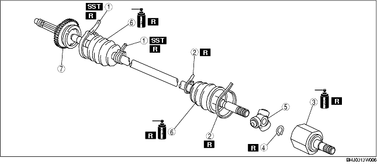
|
Boot band (axle side) {: #wp1059829} (See Boot Band (Axle Side) Disassembly Note.) {: #wp1059893} (See Boot Band (Axle Side) Assembly Note.) {: #wp1059907} |
|
|---|---|
|
2 {: #wp1059867} |
Boot band (differential side) {: #wp1059870} (See Boot Band (Differential Side) Disassembly Note.) {: #wp1059931} (See Boot Band (Differential Side) Assembly Note.) {: #wp1059945} |
|
3 {: #wp1059874} |
Tripod joint socket {: #wp1059877} (See Tripod Joint Socket Disassembly Note.) {: #wp1059969} (See Tripod Joint Socket Assembly Note.) {: #wp1059983} |
|
4 {: #wp1059995} |
Snap ring {: #wp1059998} (See Snap Ring, Tripod Joint Disassembly Note.) {: #wp1060026} (See Tripod Joint, Snap Ring Assembly Note.) {: #wp1060040} |
|
5 {: #wp1060052} |
Tripod joint {: #wp1060055} (See Snap Ring, Tripod Joint Disassembly Note.) {: #wp1060087} (See Tripod Joint, Snap Ring Assembly Note.) {: #wp1060101} |
|
6 {: #wp1060113} |
Boot {: #wp1060116} (See Boot Disassembly Note.) {: #wp1060152} (See Boot Assembly Note.) {: #wp1060166} |
|
7 {: #wp1060178} |
Shaft and ball joint component {: #wp1060181} |
Boot Band (Axle Side) Disassembly Note
*Note*{: #wp1060279}
• Remove the boot band only if there is an abnormality.
- Remove the boot band using end clamp pliers.{: #wp1060297}
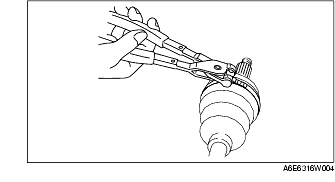
Boot Band (Differential Side) Disassembly Note
- Remove the crimp of the clip using a flathead screwdriver.{: #wp1060334}
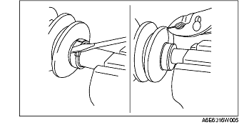
Tripod Joint Socket Disassembly Note
- Place an alignment mark on the drive shaft and the outer ring.{: #wp1060371}
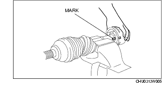
- Remove the outer ring.
Snap Ring, Tripod Joint Disassembly Note
-
Place an alignment mark on the shaft and tripod joint.
-
Remove the snap ring using a snap ring plier.{: #wp1060428}
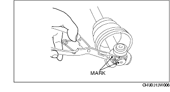
- Remove the tripod joint from the shaft.
Caution
• To prevent damage to the component, do not use a hammer when removing it.
Boot Disassembly Note
*Note*{: #wp1060493}
• Remove the axle side boot only if there is an abnormality.
- Wrap the shaft spline with vinyl tape.{: #wp1060511}
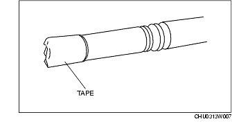
- Remove the boot.
Boot Assembly Note
*Note*{: #wp1060558}
• The boot shapes on the axle side and the differential side are different so do not miss install them.
- Fill the inside of the new dust boot (wheel side) with grease.
*Note*{: #wp1060586}
• Do not touch the grease with your hand. Apply it from the tube to prevent foreign matter from entering the boot.
Grease amount90-110 g {3.18-3.88 oz}
-
Install the boot with the drive shaft spline still wrapped with vinyl tape.
-
Remove the vinyl tape.
Tripod Joint, Snap Ring Assembly Note
- Align the tripod joint with the shaft mark and insert it using a brass bar.{: #wp1060665}
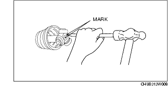
Caution
• To prevent damage to the component, do not tap the roller part when installing.
- Install the new snap ring to the shaft installation slot securely using a snap ring pliers.
Tripod Joint Socket Assembly Note
- Fill the outer ring and boot (differential side) with the repair kit grease.
*Note*{: #wp1060750}
• Do not touch the grease with your hand. Apply it from the tube to prevent foreign matter from entering the boot.
Grease amount135-155 g {4.77-5.46 oz}
-
Assemble the outer ring.
-
Release any trapped air from the boots by carefully lifting up the small end of each boot with a cloth wrapped screwdriver.{: #wp1060809}
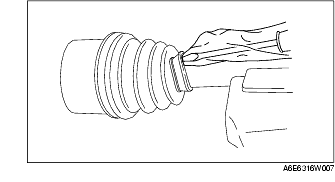
Caution
• Do not let the grease leak. {: #wp1064161}• Do not damage the boot.
- Set the drive shaft length to the specification when the inside of the boots is at ambient pressure.
Rear drive shaft standard lengthLeft side: 778.5-788.5 mm {30.65-31.04 in}Right side: 818.5-828.5 mm {32.22-32.62 in}
- After installation, verify that there is no boot damage or grease leakage.
Boot Band (Differential Side) Assembly Note
- Using pliers, pull the boot band around the boot slot in opposite direction of drive shaft forward rotation direction and tighten.{: #wp1060942}
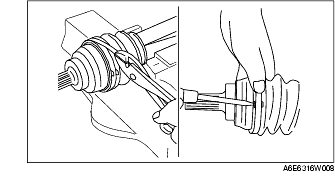
-
Insert the end of the boot band between the boot band clip and fold back the clip tabs using a flathead screwdriver to secure the boot band.
-
Verify that the boot band is installed to the boot slot securely.
Boot Band (Axle Side) Assembly Note
- Turn the adjusting bolt of the SST and adjust the opening size to the specification A.{: #wp1060999}
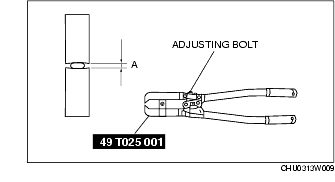
Specification A2.9 mm {0.11 in}
- Crimp the boot band (small-size) using the SST.{: #wp1061062}
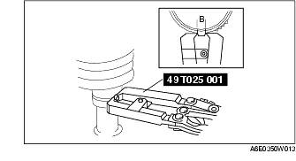
- Verify that the crimp value B is within the specification.
• If the crimp value B exceeds the specification, reduce opening length A of the SST and recrimp the boot band. {: #wp1061109}• If the crimp value B is less than the specification, increase opening length A of the SST and crimp the new boot band.
Specification B2.4-2.8 mm {0.095-0.110 in}
- Verify that the boot band does not protrude from the boot band installation area.
• If the boot band protrudes from the installation area, replace it with a new band and repeat Step 2-4.
-
Fill the boot with the repair kit grease.
-
Adjust opening length A of the SST to the specification.
Specification A3.2 mm {0.13 in}
-
Crimp the boot band (large-size) using the SST.
-
Verify that the boot band crimp value B is within the specification.
• If crimp value B exceeds the specification, reduce opening length A of the SST and recrimp the boot band. {: #wp1061294}• If the crimp value B is less than the specification, replace the boot band, increase opening length A of the SST, and then recrimp the new boot band.
Specification B2.4-2.8 mm {0.095-0.110 in}
- Verify that the boot band does not protrude from the boot band installation area.
• If the boot band protrudes from the installation area, replace it with a new band and repeat Step 7-9.